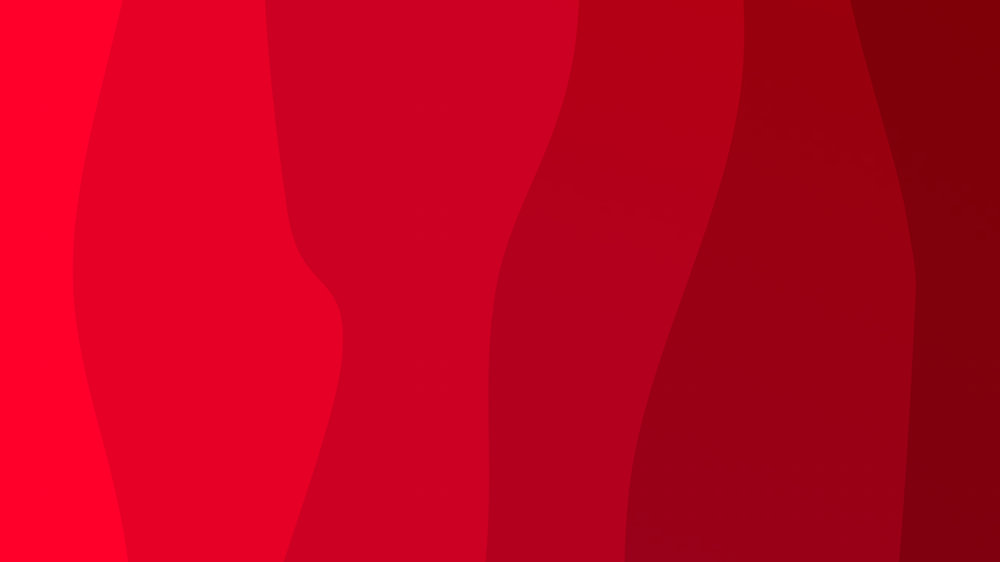

Joran Mostert
Bio
Ik ben Joran Mostert, ik zit op het Techniek College Rotterdam. Ik ben 18 jaar en heb 1 kleiner broertje. Ik heb deze studie gekozen omdat ik het leuk vindt om problemen op te lossen en daarnaast coderen in het algemeen vind ik leuk. Daarnaast heb ik ook nog een aantal hobby´s die zijn als volgt: gamen, sporten, slapen. Ook werk ik bij een fietsenbedrijf doe aan korfbal.